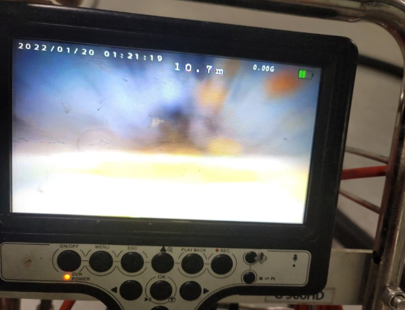
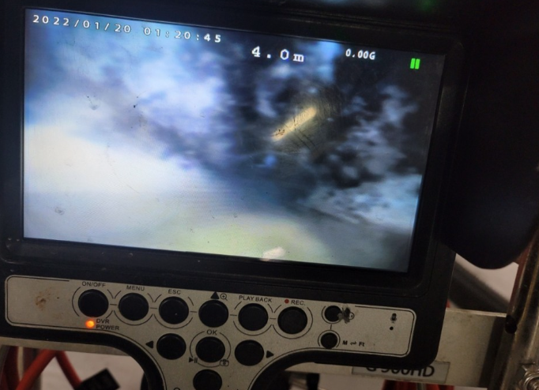
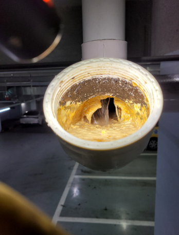

🏠 장안구하수구막힘 연무동 파장동 하수도뚫음 과정 함께 살펴봐요!
수원 하수구막힘 전문 시공 후기

📋 작업 개요
- 위치: 수원
- 서비스 유형: 하수구막힘, 배관막힘, 역류해결, 뚫는업체, 고압세척
- 작업 일시: 2022. 12. 21. 20:44
- 업체명: 하수구수사대 (010-5615-2118)
🔍 문제 상황
안녕하세요 하수구수사대입니다.
우리가 실내에서 사용을 하고 있는 모든 물들은 배관을 통해서 외부로 배출이 되는 것이라고 할 수 있습니다. 그러므로 배관이 막히게 되는 경우에는 실내에서 사용하게 되는 각종 배관시설들에서 여러 가지의 문제점이 발생을 할 수 있는 것입니다. 이번에 방문을 한 현장의 경우도 배관막힘으로 인해서 저희 쪽으로 급하게 연락을 주신 곳이었는데요 장안구하수구막힘 연무동 파장동 하수도뚫음 현장을 통해서 어떤 과정을 통해서 막힘을 해결을 하게 되었는지를 알려드리도록 하겠습니다.
장안구하수구막힘 연무동 파장동 하수도뚫음 방문한 현장에서는
심각한 하수구 막힘으로 인해서 불편함을 겪고 있다고 연락을 받게 되었습니다. 현장은 업무를 보고 있는 회사에서 발생을 한 것이었는데요 일을 하는 공간이다 보니 설비를 사용하기 어렵게 되면서 업무와 구내식당 모두 원활하게 운영이 되지 못하는 상황이었습니다.

🔎 원인 분석
💡 전문가 진단: 장안구하수구막힘 연무동 파장동 하수도뚫음 방문한 현장에서는
현장의 건물은 규모가 큰 건물이기도 하였는데요.
이렇게 규모가 큰 건물의 경우는 아무래도 드나드는 사람들이 많다 보니 하수구막힘에 있어서 더욱 취약해질 수 있는 곳입니다. 그러므로 이러한 부분을 인지를 하고 평소에 보다 더 정기적인 관리가 필요하다고 할 수 있는데요 대규모의 건물들 같은 경우는 주기적으로 전문 업체를 통해서 점검을 받아주는 것이 필요하다고 할 수 있습니다.
갑작스러운 하수구 막힘이 발생하는 것을 방지하기 위해서는
미리 관리를 하고 점검을 하는 것이 필요하다고 할 수 있습니다. 문제가 생기기 전에 미리 세척과 같은 작업을 해주게 되면 건물을 사용하는데 있어서 좀 더 불편함 없이 사용을 할 수 있습니다. 본격적인 작업을 하기 위해서 배관을 살펴보았는데요 우선 주변으로 주차된 차량들이 많이 있었기 때문에 지장을 주지 않고 작업을 하기 위해서 꼼꼼하게 확인 작업을 하였습니다.
많은 사람들이 업무를 하면서 사용하는 공간인 만큼 작업을 하면서 주변에도 피해가 가지 않도록 하는 것이 무엇보다도 중요한 것이라고 할 수 있습니다. 가장 먼저 피해가 많이 발생한 화장실과 구내식당을 중심으로 점검을 하는 절차를 진행하였습니다.

🔧 작업 과정
이번 문제로 인해서 배수구를 사용하기 어렵게 되면서
역류가 발생한 저층의 경우에는 문제가 상당히 심각한 상황이었습니다. 역류가 발생을 하게 되면 가장 먼저 느끼는 것이 악취로 인한 불편함인데요 오랜 시간 동안 묵혀놓은 이물질들이 역류를 하게 되면서 물과 함께 섞여서 올라오다 보니 지독한 악취가 날 수밖에 없는 것입니다.
본격적인 작업을 위해서 외부에 있는 메인 배관을 확인을 해보았는데요 여러 차례 탐지를 통해서 원인이 발생한 배관을 찾을 수 있었습니다. 그리고 내시경을 통해서 배관의 상태를 점검해 보니 상당한 양의 이물질들이 내부에 들어있는 것을 볼 수 있었습니다.
내시경을 이용해서 내부의 상태를 확인을 하고 본격적인 제거 작업을 시작하게 되었는데요
많은 양의 이물질들이 이렇게 고여서 부패를 하게 되면서 악취를 동반한 심각한 문제가 발생하게 된 것이었습니다.
이물질 제거 장비를 사용하기 위해서 입구 쪽에 올라와 있는 이물질들을 일부 제거하는 작업을 먼저 시행하였습니다. 내부의 시야를 확보한 후에 본격적으로 장비를 이용해서 이물질을 제거하는 작업을 하였는데요 이렇게 막힘의 원인이 되는 이물질들은 모두 제거를 해야 또다시 막힘이 발생을 하는 것을 예방할 수 있게 되는 것입니다.
이렇게 장안구하수구막힘 연무동 파장동 하수도뚫음


✅ 작업 완료
모든 작업을 완벽하게 해결하고 현장 마무리를 하였습니다.
경기도 수원시 장안구 서부로 2139 5층 5032호




⚠️ 하수구 배관 막힘 예방 및 관리 가이드
- ✅ 머리카락, 비닐, 물티슈 등 물에 분해되지 않는 이물질은 하수구 유입을 절대 금지해 주세요.
- ✅ 하수구 거름망을 씌우고 모여진 이물질은 주기적으로 쓰레기통에 바로 비워주셔야 합니다.
- ✅ 배관 노후가 심할 경우 이물질이 더 쉽게 걸리므로 주기적인 배관 세척(고압세척 등)을 권장합니다.
- ✅ 작업 후 1년 이내 재발 시 하수구수사대에서 무상 A/S 보증 서비스를 제공합니다.
💡 핵심 정리
- 확실한 장비 작업(내시경 점검 및 샤프트 스케일링)으로 원인을 뿌리 뽑습니다.
- 작업 후 1년 이내에 동일한 부위 재발 시 100% 무상 A/S 서비스를 보장합니다.
- 서울 · 경기 · 인천 전 지역에 24시간 언제든 긴급 출동할 수 있도록 항시 대기 중입니다.
❓ 자주 묻는 질문 (FAQ)
🚨 수원 하수구막힘 문제로 고민이신가요?
정확한 원인 진단과 확실한 시공으로 재발 없는 해결을 약속드립니다.
24시간 긴급 출동 | 서울 · 경기 · 인천 전지역 | 1년 내 재발 시 무상 A/S